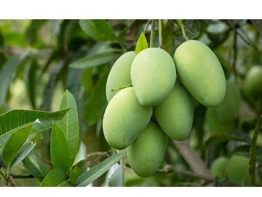

🥭Tentang Mangga
Mangga merupakan salah satu buah tropis yang banyak dibudidayakan di Indonesia. Buah ini memiliki rasa yang beragam, mulai dari manis hingga sedikit asam, tergantung jenis dan tingkat kematangannya. Mangga memiliki nama ilmiah Mangifera indica L. dan termasuk dalam famili Anacardiaceae.
🔎 Informasi Umum
🍃 Ciri-Ciri Mangga
🌱 Bentuk Pohon
Pohon mangga dapat tumbuh sekitar 10 hingga 30 meter dengan batang yang kuat dan tajuk yang rimbun.
🍃 Daun
Daunnya berbentuk lonjong, berwarna hijau tua ketika dewasa dan dapat berwarna kemerahan ketika masih muda.
🥭 Buah
Buah mangga memiliki bentuk dan ukuran yang beragam sesuai varietasnya. Kulitnya dapat berubah warna ketika matang.
💛 Daging Buah
Daging buah umumnya berwarna kuning atau jingga, memiliki tekstur lembut, dan terasa manis ketika matang.
🌱 Habitat Mangga
🌿 Habitat Alami dan Budidaya
Mangga dapat tumbuh dengan baik di daerah tropis dan subtropis. Tanaman ini membutuhkan sinar matahari yang cukup, tanah yang subur, serta drainase yang baik.
Mangga dapat dibudidayakan di pekarangan, kebun, dan perkebunan, terutama pada daerah dataran rendah hingga dataran sedang.
Penyebaran Mangga di Indonesia
Markisa tersebar di berbagai wilayah Indonesia, terutama daerah yang memiliki kondisi iklim dan lingkungan yang sesuai untuk pertumbuhan tanaman manggis.
🚜 Sentra Budidaya Mangga di Indonesia
Mangga dibudidayakan di sejumlah daerah di Indonesia. Beberapa wilayah dikenal sebagai sentra produksi manggis karena memiliki kondisi lingkungan dan kegiatan budidaya yang mendukung.
Beberapa daerah seperti Probolinggo, Pasuruan, dan Situbondo dikenal sebagai wilayah penghasil mangga.
Daerah seperti Indramayu, Majalengka, dan Cirebon memiliki budidaya mangga yang cukup berkembang.
Mangga juga banyak dibudidayakan di beberapa wilayah Jawa Tengah.
Berbagai daerah di Sumatera juga membudidayakan mangga untuk kebutuhan masyarakat dan perdagangan.
💜 Kandungan dan Manfaat
🌱 Cara Perawatan Mangga
💧 Penyiraman
Siram tanaman secara rutin, terutama ketika masih muda dan saat musim kemarau. Hindari genangan air di sekitar akar.
☀️ Sinar Matahari
Mangga membutuhkan sinar matahari yang cukup agar pertumbuhan dan proses pembentukan buah dapat berlangsung dengan baik.
🌿 Pemupukan
Berikan pupuk secara berkala untuk membantu pertumbuhan tanaman serta mendukung pembentukan bunga dan buah.
🌿 Pemupukan
Berikan pupuk secara berkala untuk membantu pertumbuhan daun, bunga, dan buah.
✂️ Pemangkasan
Pangkas cabang yang kering, rusak, atau terlalu lebat agar tanaman memiliki bentuk yang baik dan sirkulasi udara tetap terjaga.
🐛 Pengendalian Hama
Periksa daun, bunga, dan buah secara rutin untuk mendeteksi hama atau penyakit sejak dini.
✨ Tahukah Kamu?
Mangga memiliki banyak varietas dengan bentuk, warna, rasa, dan aroma yang berbeda. 🥭 Ada mangga yang lebih cocok dimakan ketika matang, sementara beberapa jenis juga nikmat dikonsumsi ketika masih muda sebagai rujak atau manisan.